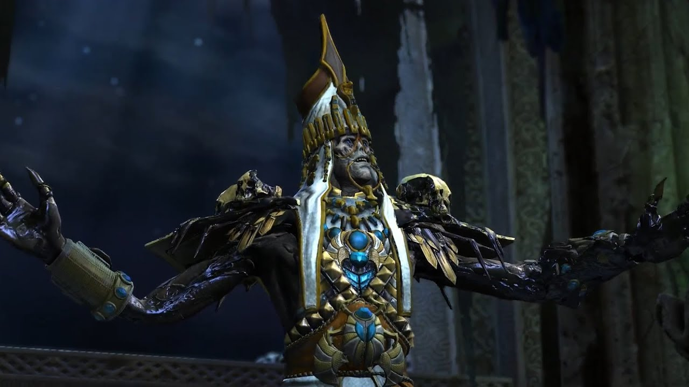
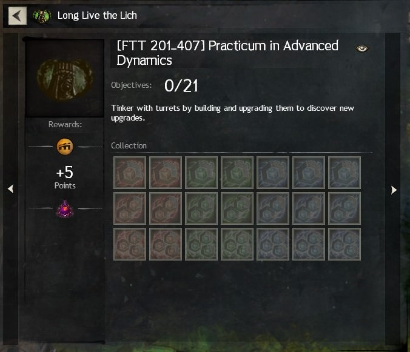

Poradnik | "Long Live The Lich" Mastery
"Long Live The Lich" Mastery
Achievmenty z Long Live The Lich
- Achivmenty ze Story
- Achivmenty z Mapy
- Kolekcje FTT 100-407
- Kolekcja ‘Banner of The Dauntless Commander’
- Kolekcja Mounta: Rolling Bettle
- Achievementy za Masterki i Adventures
1. Loquacious Orator
W tym achievmencie musisz wybrać wszystkie dostępne opcje dialogowe (łącznie jest ich 8) pomiędzy dwoma ścieżkami dialogowymi. Do zrobienia tego achievmenta będziecie musieli odpalić tę instancję kilka razy, na szczęście zaraz po wybraniu trzeciej opcji można od razu się przelogować.
W pierwszym okienku są dwie opcje dialogowe które musicie wybrać:
-
If it please the court, I’ll speak
- This ‘creature’ is an associate of mine
- Your Honor did you have Gorrik examined?
-
Look at him? what’s that supposed to mean?
- So you admit you have no medical proof that he’s infected or contagious?
- Your Honor, Gorrik is working to prevent an outbreak.
-
Its’s the Scarab Plague.
- Can’t say any more, Your Honor
W drugim okienku masz do wyboru dwie opcje które rozdzielają się na dwie osobne ścieżki:
2. Squish, Squish
*Żeby zdobyć ten achivement, konieczne jest skończenie wcześniej całego story*
Bardzo prosty achivment - trzeba przejechać wszystkie Skarabeusze w czasie poniżej 30 sekund. Pamiętaj, żeby być na Raptorze podczas spotkania ze statkiem.

3. Stay Alseep, Sheep
*Żeby zdobyć ten achivement, konieczne jest skończenie wcześniej całego story*
By zaliczyło achievement trzeba powstrzymać Istari The Inexorable przed zamianą NPC w zombie. Wystarczy przełamać breakbar tuż po pojawieniu się. Istari przestaje używać tego ataku gdy jego żywotność spadnie poniżej 50%.
Druga instancja story - Forearmed is Forewarned (Tomb of Primeval Kings)
1. Silent But Deadly
Prosty achievement - nie można podnieść poziomu wykrycia do 100%, bo wtedy pojawiają się czempiony i tracimy achievement. Kiedy przeciwnik Cię wykryje ikonka nad jego głową zmieni kolor na żółty, a jeśli zostaniesz wykryty przez przeciwnika ponownie (a więc przez przeciwnika z żółtą ikonką) to zmienia ona kolor na czerwony. Potem pojawiają się czempiony. Pamiętaj o umiejętności nr 1 i wykończeniu umiejętnością nr 2.
2. Trip The Quantum Fantastic
Celem achievementa jest zdezorientowanie przeciwnika 25 razy przy użyciu umiejętności nr 4. UWAGA: próba zrobienia tego achievmenta może spowodować utratę Silent But Deadly, więc polecam robić je osobno.
Sześć kroków do szybkiego zrobienia achievmenta:
- Znajdź grupkę kilku Awakened’ów.
- Zostań odkryty przez przeciwników.
- Użyj umiejętności nr 4 żeby teleportować się pomiędzy Awakened’ami.
- Powtarzaj do czasu aż pasek nad głową się nie zapełni.
- Odchodzimy od przeciwników i używamy heala.
- Wracamy do kroku pierwszego.
Można go także zrobić na pojedynczym przeciwniku ale działając na grupie kilku wpada on znacznie szybciej (po kilku powtórzeniach).
3. Glory Hog
*Żeby zdobyć ten achivement, konieczne jest skończenie wcześniej całego story*
Do tego achievmenta trzeba posadzić trzy sadzonki zanim zrobi to Canach. Polecam podążać tuż za nim i od razu po tym gdy zobaczycie miejse przeznaczone na sadzonkę, wyprzedzić go - tak by zdążyć przed nim.

4. Decimation
Wystarczy zabić sześciu Awakened’ów za jednym zamachem (jedną bombą). Canach rzucając bombę może przypadkiem zrobić tego achievmenta za Ciebie.
Trzecia instancja story - Be My Guest (Front Line)
1. Whistling in The Dark
Trzeba obronić Canach’a podczas gdy ten podkłada bombę. By zrobić to skutecznie wystarczy zabić wszystkie mobki które idą w jego stronę w tym pojawiającego się na końcu czempiona.
2. Dexterous and Flexible
Nie można zostać uderzonym przez żaden laser w bazie Joko, zrobienie tego achievmenta wyklucza Captive Audience . Do zrobienia tego achievmenta polecam mesmera z uwagi na dużą ilość teleportacji, pamiętajcie o używaniu sygnetu i uważajcie na lasery przy walce z Beastmarshal. Można też zrobić go za kogoś (jedna osoba zostaje z tyłu, a druga robi instancję dalej sama; potem zamiana)
3. Captive Audience
Do zrobienia tego achievmenta musisz wysłuchać wszystkich zaczepek Joko co oznacza, że musisz dać się uderzyć laserom, ognistym i mroźnym kratką, co automatycznie wyklucza Cię z Dexterous and Flexible . Achievmenta powinieneś dostać po usłyszeniu ostatniej zaczepki w trzecim pokoju. Wystarczy, że w każdym pomieszczeniu będziesz wchodzić na pierwszą przeszkodę dopóki Joko nie przestanie gadać a w trzecim pokoju poczekasz aż Joko skończy się naśmiewać. Po dostaniu achievmenta możesz swobodnie używać sygnetu i kontynuować instancję.


Achievementy z Mapy
- Rude Awakening (3 AP)
- Taking All The Secrets (3 AP)
- Debbie’s Cake (2 AP)
- Still Water Run Deep (2 AP)
- Pond Scum (1 AP) [Ukryty]
- Crab Kicking (1 AP)
- Dance with Caci (1 AP)
- Thing’s That Wouldn’t Leave (1 AP)
- I Can See My House (1 AP)
1. Rude Awakening
Zabij wystarczająco wielu Awakened’ów - dopóki nie uzbierasz 25 fiolek ich krwi.
2. Dexterous and Flexible
Do tego achivmenta musisz zrobić metę ‘Containing the Scarabe Plague’ dziesiec razy otworzyć skrzynki, ktore sa dostepne po zakonczeniu meta eventu (zalicza po otwarciu najwiekszej z nich; skonczenie meta eventu nie jest konieczne o ile uda Ci sie dostac do srodka innym sposobem). Żeby dostać się do komory z skrzynkami musisz użyć ’Access Card’ który wypada po pokonaniu ‘Czempiona Inquestow’. Karte nalezy użyć żeby dostać buffa pozwalającego na użycie teleportera w jednym z domków.
3. Debbie’s Cake
Żeby dostać achivmenta musisz zjeść dziesięć ciast Debbie które możesz kupić po prawidłowym skompletowaniu serduszka w ’Arkjok Farmlands’. Żeby zdobyć ciasta musisz skończyć całe serduszko i spalić ‘Infested Crop’ i tylko ‘Infested Crop’ jeśli spalisz inne uprawy dostaniesz odpowiednio mniej ciastek. Każdego dnia możesz kupić tylko trzy ciastka na postać co oznacza że do skompletowania achievmenta musisz poprawnie wykonać serduszko cztery razy (na różnych postaciach, lub przez cztery dni). Jeśli palenie upraw nie skompletuje serduszka zabij kilka szczurów i oddaj ich mieso. Jeśli boisz się sfailowania serduszka mozesz skończyć je w całosci poprzez oddawanie mięsa szczurów.
4. Still Water Run Deep
Musisz dopłynąć na same dno Ntouka Pond (lewy górny róg mapy), wystarczy płynąć w stronę Mastery Insight i powinno zaliczyć achivmenta.
5. Pond Scum
Musisz zabić Legendary Crazed Broodmother w okolicy Ntouka Pond (lewy górny róg mapy).
6. Crab Kicking [Ukryty]
Zeby zdobyc ten ukryty achievement udaj się w stronę Corsair Landing i poszukaj kraba o nazwie ‘Surly Crab’ po czym użyj opcji Kick żeby kopnąć kraba w stronę pobliskiego ‘Awakeneda’. To spowoduje że krab go zaatakuje i w zamian podaruje nam achievement.
7. Dances with Cacti
Co pewien czas pojawia się event ‘Dance with the choya to assist Tebb's research’ w pobliżu ‘Idol of The Choya POI’, trzeba porozmawiać z ‘Researcher Tebb’ i poczekać aż zmieni cię w choyę. Teraz musisz dostać się na kamienną strukturę pośrodku tańczących choyi, użyj jakiejkolwiek umiejętności po czym wyjdź z transformacji i użyj komendy /dance.
8. Thing’s That Wouldn’t Leave
Musisz dostać się do ’Vault Alpha’ który otwiera się za pomocą guzika na ścianie, w środku musisz zabić wszystkich przeciwników i czekać tak długo aż zostaniesz teleportowany na zewnątrz.
9. I Can See My House
*Do wykonania tego achivmenta musisz posiadać mounta Griffon i mieć go rozwiniętego na maxa inaczej adventure się nie pokaże i nie będziesz w stanie wykonać achivmenta*
Dostań się na najwyższą górę z Griffon Master Course i odpal po czym zmień mounta na Roller Beetle.
Kolekcje FTT 100-407
- [FTT 100] Intro to Field Tech Turret Dynamics (1 AP)
- [FTT 101-107] Core Turret Dynamics (3 AP)
- [FTT 201–407] Practicum in Advanced Dynamics (5 AP)
- [FTT 201] Intermediate Dynamics—Direct Damage Level 2 (1 AP)
- [FTT 202] Intermediate Dynamics—Area Damage Level 2 (1 AP)
- [FTT 203] Intermediate Dynamics—Healing Aura Level 2 (1 AP)
- [FTT 204] Intermediate Dynamics—Shield Bubble Level 2 (1 AP)
- [FTT 205] Intermediate Dynamics—Boon Wave Level 2 (1 AP)
- [FTT 206] Intermediate Dynamics—Speed Wall Level 2 (1 AP)
- [FTT 207] Intermediate Dynamics—Gravimetric Tunneling Field Oscillator Level 2 (1 AP)
- [FTT 301] Proficient Dynamics—Direct Damage Level 3 (1 AP)
- [FTT 302] Proficient Dynamics—Area Damage Level 3 (1 AP)
- [FTT 303] Proficient Dynamics—Healing Aura Level 3 (1 AP)
- [FTT 304] Proficient Dynamics—Shield Bubble Level 3 (1 AP)
- [FTT 305] Proficient Dynamics—Boon Wave Level 3 (1 AP)
- [FTT 306] Proficient Dynamics—Speed Wall Level 3 (1 AP)
- [FTT 307] Proficient Dynamics—Gravimetric Tunneling Field Oscillator Level 3 (1 AP)
- [FTT 401] Advanced Dynamics—Direct Damage Level 4 (1 AP)
- [FTT 402] Advanced Dynamics—Area Damage Level 4 (1 AP)
- [FTT 403] Intermediate Dynamics—Healing Aura Level 4 (1 AP)
- [FTT 404] Advanced Dynamics—Shield Bubble Level 4 (1 AP)
- [FTT 405] Advanced Dynamics—Boon Wave 4 (1 AP)
- [FTT 406] Advanced Dynamics—Speed Wall Level 4 (1 AP)
- FTT 407] Advanced Dynamics—Gravimetric Tunneling Field Oscillator Level 4 (1 AP)
1. [FTT 100] Intro to Field Tech Turret Dynamics
Porozmawiaj z ‘Krew Leader Drazz’ który znajduje się w ‘Allied Encampment’ i zbadaj wiezyczke znajdująca się obok niego żeby dostać tego achievementa i odblokować ‘FTT 101-107’
2. [FTT 101-107] Core Turret Dynamics
Musisz zabijać ‘Awakened Inquests’ dopóki nie wypadną Ci wszystkie części tej kolekcji. Po zdobyciu wszystkich części udaj się do ‘Krew Leader Drazz’ żeby odblokować pozostałe achievementy.
3. [FTT 201–407] Practicum in Advanced Dynamics
Ten achievement wymaga żebyś zrobił wszystkie pozostałe achievementy z serii FTT
4. [FTT 201] Intermediate Dynamics—Direct Damage Level 2
Musisz zbudować dziesiec ‘Direct Damage Level 1 Turrets’, Mozesz tego dokonac przy uzyciu ‘Spare Parts’ po użyciu FTT Deployment Kits zakupionego od Krew Leader Drazz lub po użyciu FTT Turret Sites które są rozsiane po całej mapie.
5. [FTT 202] Intermediate Dynamics—Area Damage Level 2
Musisz zbudować 10 ‘Area Damage Level 1 Turrets’, Mozesz tego dokonac przy uzyciu ‘Spare Parts’ po użyciu FTT Deployment Kits zakupionego od Krew Leader Drazz lub po użyciu FTT Turret Sites które są rozsiane po całej mapie.
6. [FTT 203] Intermediate Dynamics—Healing Aura Level 2
Musisz zbudować 10 ‘Healing Aura Level 1 Turrets’, Mozesz tego dokonac przy uzyciu ‘Spare Parts’ po użyciu FTT Deployment Kits zakupionego od Krew Leader Drazz lub po użyciu FTT Turret Sites które są rozsiane po całej mapie.
7. [FTT 204] Intermediate Dynamics—Shield Bubble Level 2
Musisz zbudować 10 ‘Shield Bubble Level 1 Turrets’, Mozesz tego dokonac przy uzyciu ‘Spare Parts’ po użyciu FTT Deployment Kits zakupionego od Krew Leader Drazz lub po użyciu FTT Turret Sites które są rozsiane po całej mapie.
8. [FTT 205] Intermediate Dynamics—Boon Wave Level 2
Musisz zbudować 10 ‘Direct Damage Level 1 Turrets’, Mozesz tego dokonac przy uzyciu ‘Spare Parts’ po użyciu FTT Deployment Kits zakupionego od Krew Leader Drazz lub po użyciu FTT Turret Sites które są rozsiane po całej mapie.
9. [FTT 206] Intermediate Dynamics—Speed Wall Level 2
Musisz zbudować 10 ‘Speed Wall Level 1 Turrets’, Mozesz tego dokonac przy uzyciu ‘Spare Parts’ po użyciu FTT Deployment Kits zakupionego od Krew Leader Drazz lub po użyciu FTT Turret Sites które są rozsiane po całej mapie.
10. [FTT 207] Intermediate Dynamics—Gravimetric Tunneling Field Oscillator Level 2
Musisz zbudować 10 ‘Gravimetric Tunneling Field Oscillator Level 1 Turrets’, Mozesz tego dokonac przy uzyciu ‘Spare Parts’ po użyciu FTT Deployment Kits zakupionego od Krew Leader Drazz lub po użyciu FTT Turret Sites które są rozsiane po całej mapie.
11. [FTT 301] Intermediate Dynamics—Direct Damage Level 3
Musisz ulepszyć osiem turretów do poziomu ‘Direct Damage Level 2 Turrets’, Mozesz tego dokonac przy uzyciu ‘Spare Parts’.
12. [FTT 302] Intermediate Dynamics—Area Damage Level 3
Musisz ulepszyć osiem turretów do poziomu ‘Direct Damage Level 2 Turrets’, Mozesz tego dokonac przy uzyciu ‘Spare Parts’.
13. [FTT 303] Intermediate Dynamics—Healing Aura Level 3
Musisz ulepszyć osiem turretów do poziomu ‘Direct Damage Level 2 Turrets’, Mozesz tego dokonac przy uzyciu ‘Spare Parts’.
14. [FTT 304] Intermediate Dynamics—Shield Bubble Level 3
Musisz ulepszyć osiem turretów do poziomu ‘Direct Damage Level 2 Turrets’, Mozesz tego dokonac przy uzyciu ‘Spare Parts’.
15. [FTT 305] Intermediate Dynamics—Boon Wave Level 3
Musisz ulepszyć osiem turretów do poziomu ‘Direct Damage Level 2 Turrets’, Mozesz tego dokonac przy uzyciu ‘Spare Parts’.
16. [FTT 306] Intermediate Dynamics—Speed Wall Level 3
Musisz ulepszyć osiem turretów do poziomu ‘Direct Damage Level 2 Turrets’, Mozesz tego dokonac przy uzyciu ‘Spare Parts’.
17. [FTT 307] Intermediate Dynamics—Gravimetric Tunneling Field Oscillator Level 3
Musisz ulepszyć osiem turretów do poziomu ‘Gravimetric Tunneling Field Oscillator Level 2 Turrets’, Mozesz tego dokonac przy uzyciu ‘Spare Parts’.
18. [FTT 401] Intermediate Dynamics—Direct Damage Level 4
Musisz ulepszyć osiem turretów do poziomu ‘Direct Damage Level 3 Turrets’, Mozesz tego dokonac przy uzyciu ‘Spare Parts’.
19. [FTT 402] Intermediate Dynamics—Area Damage Level 4
Musisz ulepszyć osiem turretów do poziomu ‘Area Damage Level 3 Turrets’, Mozesz tego dokonac przy uzyciu ‘Spare Parts’.
20. [FTT 403] Intermediate Dynamics—Healing Aura Level 4
Musisz ulepszyć osiem turretów do poziomu ‘Healing Aura Level 3 Turrets’, Mozesz tego dokonac przy uzyciu ‘Spare Parts’.
21. [FTT 404] Intermediate Dynamics—Shield Bubble Level 4
Musisz ulepszyć osiem turretów do poziomu ‘Shield Bubble Level 3 Turrets’, Mozesz tego dokonac przy uzyciu ‘Spare Parts’.
22. [FTT 405] Intermediate Dynamics—Boon Wave Level 4
Musisz ulepszyć osiem turretów do poziomu ‘Boon Wave Level 3 Turrets’, Mozesz tego dokonac przy uzyciu ‘Spare Parts’.
23. [FTT 406] Intermediate Dynamics—Speed Wall Level 4
Musisz ulepszyć osiem turretów do poziomu ‘Speed Wall Level 3 Turrets’, Mozesz tego dokonac przy uzyciu ‘Spare Parts’.
24. [FTT 407] Intermediate Dynamics—Gravimetric Tunneling Field Oscillator Level 4
Musisz ulepszyć osiem turretów do poziomu ‘Gravimetric Tunneling Field Oscillator Level 3 Turrets’, Mozesz tego dokonac przy uzyciu ‘Spare Parts’.